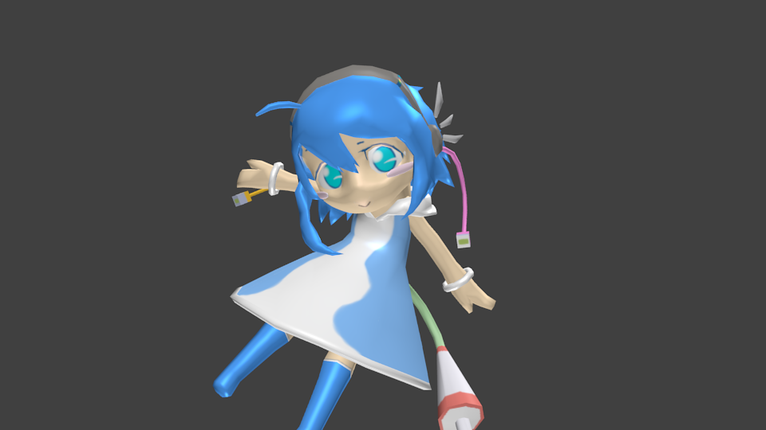

東京工業大学の工大際にて、校内案内アプリを作っている人に依頼され、テックちゃんの3Dモデルを作ることになりました。
ARではどのくらいのポリゴン数に抑えれば滑らかに動くのかと心配になり、なるだけポリゴン数が多くならないようにしました。
東京工業大学の工大際にて、校内案内アプリを作っている人に依頼され、テックちゃんの3Dモデルを作ることになりました。
ARではどのくらいのポリゴン数に抑えれば滑らかに動くのかと心配になり、なるだけポリゴン数が多くならないようにしました。
360度どこから見てもいいように工夫しました。
三角面は5149。これでちゃんとARで動かせるようだったのでよしとします。